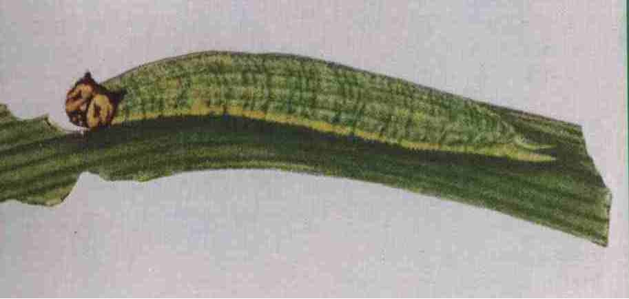
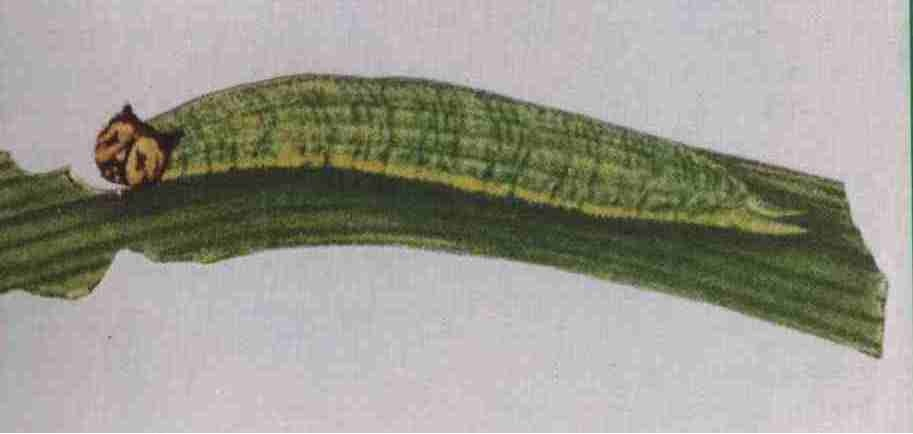

稻眼蝶
害虫名称：稻 眼 蝶
分类地位：鳞翅目弄蝶科
分布范围：河南以南，四川、云南以东各省区均有分布
为害特点：幼虫蚕食叶片成缺刻，严重时可将叶片吃光，造成水稻减产。
形态特征：成虫体长14．6--16.5 毫米，翅展约47毫米，背面暗褐色，前翅正面有2个蛇目状黑色圆斑，前1个斑纹较小；后翅反面有5－6个蛇目斑，近臀角1个特大。前后翅反面中央从前至后缘横贯1条黄白色带纹，外缘有3条暗褐色线纹。前足退化很小。老熟幼虫体长30毫米，青绿色，头部褐色，头顶有1对角状突起，形似猫头。胸腹部各节散布微小疣突，尾端有1对角状突起，全体略呈纺锤形。
 稻眼蝶成虫
稻眼蝶幼虫
稻眼蝶成虫
稻眼蝶幼虫
发病规律：在浙江省1年发生4代，以蛹在杂草上越冬，在福建等南部省区1年发生5代，以幼虫在禾本科杂草丛中越冬。3月下旬至4月上旬化蛹，4月中旬羽化。成虫白天活动，卵散产于叶背。一般在竹园附近、山边田块及田边产卵较多。初孵幼虫食害稻叶成缺刻，3龄后食量大增，严重时可将稻叶吃光，6－7月1―2代幼虫为害中稻，8―9月3―4代幼虫为害晚稻较重。幼虫老熟后一般l－3天不食不动，再吐丝将尾端固定于叶背，倒挂卷曲化蛹。
防治方法：一是在稻眼蝶2龄幼虫高峰期，每666．7平方米用80％敌敌畏乳油100毫升，加水75千克均匀喷雾，也可每666．7平方米用1．5％杀螟松粉剂2千克，拌细泥粉20千克撒施；二是在防治稻纵卷叶螟或稻弄蝶时兼治稻眼蝶。